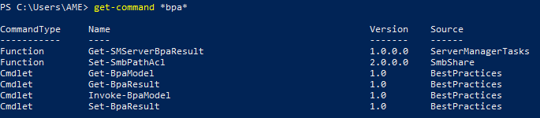

HOME > CASE-STUDY
Best practices zijn de richtlijnen die worden beschouwd als de ideale manier om onder normale omstandigheden een server te configureren. Om beheerders te helpen om inbreuken op best practices te verminderen kan je de Best Practices Analyzer gebruiken. Dit is een hulpprogramma voor serverbeheerders dat beschikbaar is in Windows Server 2008 R2 en Windows Server 2012 (R2).
Best Practices Analyzer scant de rollen die zijn geïnstalleerd op de beheerde servers en meldt aan de gebruiker de gevonden inbreuken op de best practices. Mijn case-study was om een Powershell-script te schrijven met dezelfde taak als de Best Practices Analyzer. De resultaten van dit script moesten in een HTML-file en een CSV-file kunnen verschijnen. Uiteindelijk zal mijn code in een groter Powershell-script komen, gemaakt door de werknemers van Aurelium. Met die reden moest ik rekeninghouden met de variabele $ServersSearchbase.
Ik ben deze case-study begonnen met een aantal commando’s te bekijken in verband met BPA (Best Practices Analayzer). Op deze manier had ik zicht op mijn mogelijkheden. Al snel kwam ik erachter dat er een handig commando bestaat dat een geselecteerde rol kan scannen (Invoke-BPAModel) en een commando die de best practices als resultaat gaf (Get-BpaResult).
Ik had dus de nodige code verzamelt om van één bepaalde rol de best practices te scannen en te tonen. De volgende stap was om dit voor alle geïnstalleerde rollen binnen één server te doen. Ik heb even op internet gezocht en vond een commando om informatie over Windows Server rollen te krijgen, namelijk Get-WindowsFeature. Hiermee kon ik de “best practices model id” halen uit alle geïnstalleerde rollen. Deze id’s had ik namelijk nodig als parameter voor de commando’s Invoke-BPAModel en Get-BpaResult. Vervolgens voerde ik de code uit voor iedere rol aan de hand van de code Foreach.
Vervolgens probeerde ik dit met de code Foreach voor iedere server. Hiervoor moest ik de computername in de commando’s als parameter meegeven. Maar dit werkte niet voor het commando Invoke-BPAModel. Dus moest ik opzoek naar een andere manier.
Ik kwam op een website waarop iemand twee functie had gecodeerd om de BPA-resultaten te bekijken van alle servers. Ik wou alle objecten toevoegen aan een list, maar dit lukte enkel op de server waarop je het script uitvoerde. Het script maakte op iedere server namelijk een variabele $list aan met daarin de objecten van die server.
Ik heb voor een beter overzicht de functie verwijderd en de code uit de functie in mijn code geïntegreerd. Vervolgens heb ik via onderstaande manier (die ik hier vond) alle objecten toch aan een $list kunnen toevoegen.
Tot nu toe ontbrak de scan nog van de rollen, we toonden enkel de resultaten van een vorige scan. Daarom voegde ik de regel Invoke-BPAModel $feature nog toe. Ik voegde ook de optie in om te filteren op bepaalde “severity” en het formaat van de file met de output te bepalen. Ook heb ik een aangepast bericht toegevoegd voor een “ParameterBindingValidationException”.
We hebben het script getest en getimed op het netwerk binnen
Aurelium. Op 42 minuten heeft het script 12 servers gescand en de
resultaten in een html-file gezet (bijgevoegd bij opdracht). De
medewerkers van Aurelium waren er heel tevreden over en zullen het
binnenkort gebruiken bij hun klanten.
Het script kan u
hier
bekijken.